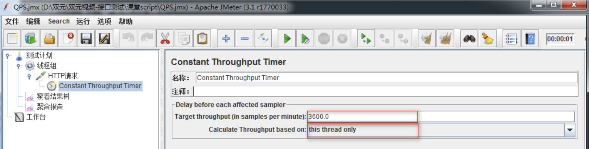

性能知识点-科普
目标
- 理解Jmeter常用性能术语
1. 需求
测试100个用户访问 https://www.baidu.com在负载达到60 QPS时的平均响应时间。
1.1 问题
1. QPS是什么？
2. 如何每秒负载数达到60QPS?
2. QPS是什么？
概念：QPS:Query Per Second每秒查询率。是一台查询服务器每秒能够处理的查询次数。
2.1. 如何每秒达到负载数达到60QPS？
2.2 Constant Throughput Timer(常数吞吐量定时器)
作用：控制Jmeter中请求时指定的吞吐量,单位为分钟
2.3 解决方案分析
1. 测试计划->线程组
2. 线程组->HTTP请求
3. HTTP请求->Constant Throughput Timer
4. 测试计划->察看结果树
5. 测试计划->聚合报告
2.4 技术难点分析
1. Constant Throughput Timer 参数配置
2.5 Constant Throughput Timer配置图

1. Target throughput(in samples per minte):目标吞吐量。
注意:
1) 这里是每分钟发送的请求数，实际填的数值为：60*QPS(60*60);
2. Calculate Throughput based on：
1) This thread only:控制每个线程的吞吐量，选择这种模式时；
总的吞吐量为设置的target Throughput乘以该线程的数量。
2.5 QPS-总结：
1. QPS概念
2. Constant Throughput Timer
3. Jmeter常用性能术语[了解]
3.1 响应时间(RT)
概念：响应时间是指系统对请求作出响应的时间。
备注：
响应时间指用户从客户端发起一个请求开始，到客户端接收到从服务器端返回结果的响应结束;
结果信息展现在客户端，整个过程所耗费的时间。
3.2 吞吐量(Throughput)
概念：单位时间内服务器处理的客户端请求数量
备注：
1) 通常情况下，吞吐量用“请求数/秒”或者“页面数/秒”来衡量。
2) 从业务角度来看，吞吐量也可以用“业务数/小时”、“业务数/天”、“访问人数/天”、“页面访问量/天”来衡量。
3) 从网络角度来看，还可以用“字节数/小时”、“字节数/天”等来衡量网络的流量。
3.3 并发用户数
概念：多个用户同一时间操作同一业务。
备注：
1) 并发用户数的时候一般结合集合点(Synchronizing Timer)一起使用；